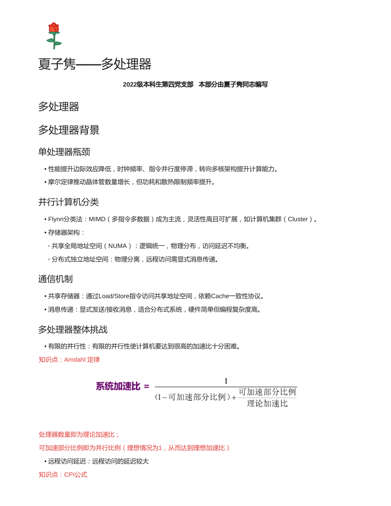
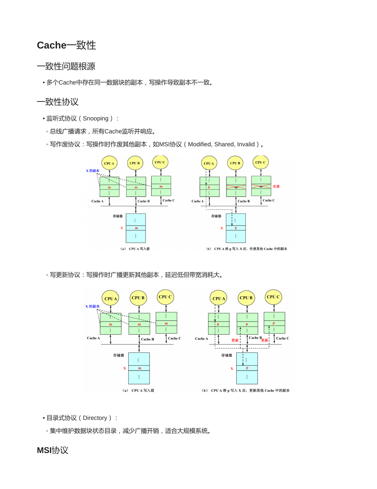
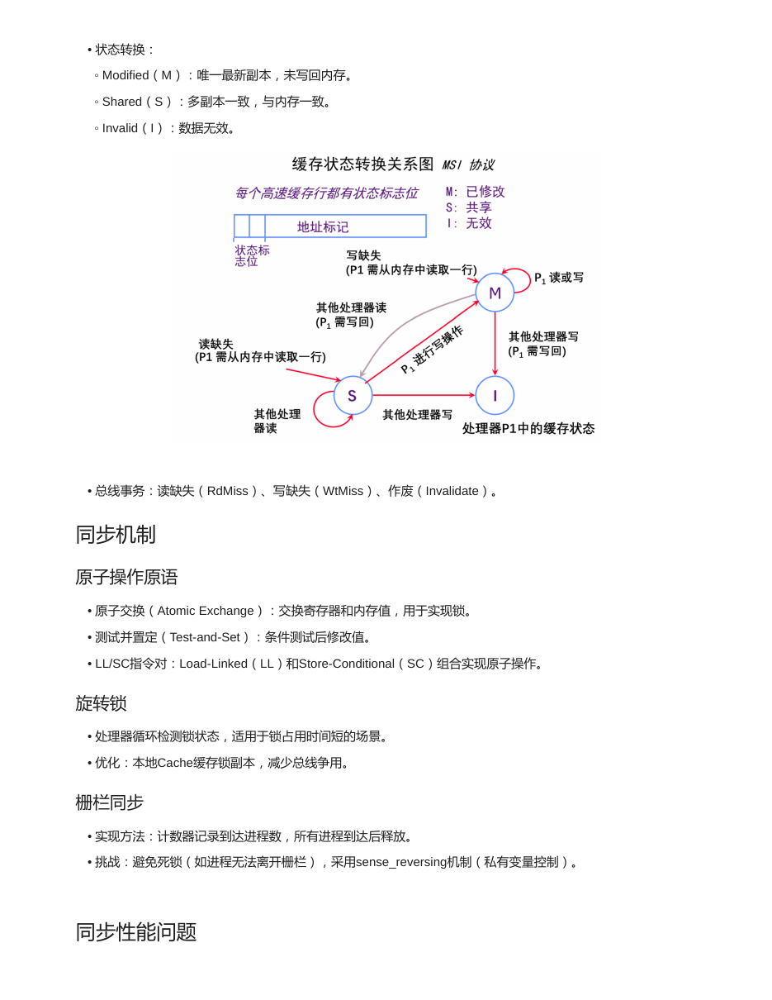
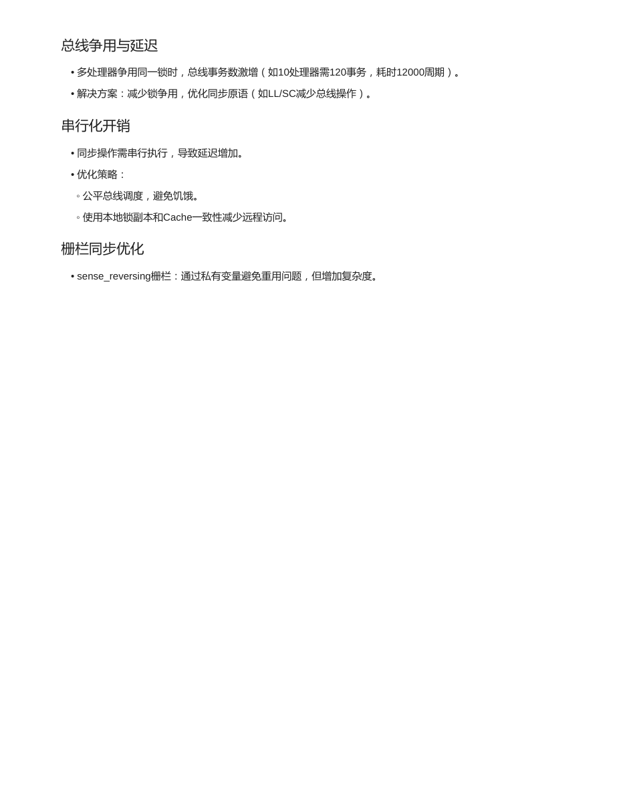

先看主线，再背公式，最后做题
每个专题页都按“概念框架、公式变量、典型题型、原讲义对照、自测问题”组织。复习时从左侧目录跳转，遇到计算题直接回到高亮公式段。
多处理器不是简单地“核越多越快”。并行性比例、通信延迟、Cache 一致性和同步开销共同决定最终速度。
每个专题页都按“概念框架、公式变量、典型题型、原讲义对照、自测问题”组织。复习时从左侧目录跳转，遇到计算题直接回到高亮公式段。
4 页原讲义截图可展开核对，适合考前查原表、原图和例题。
正文已经把知识点重新组织；这里保留讲义页面缩略图，方便你在需要时回看原版题目、图和表。



单处理器瓶颈来自性能提升边际效应降低：时钟频率受功耗和散热限制，指令级并行也有边际收益。多处理器通过多个处理器并行工作来继续提升性能。
| 分类 | 特点 | 关键词 |
|---|---|---|
| Flynn 分类 | 现代多处理器大多属于 MIMD。 | 多指令流、多数据流。 |
| 共享全局地址空间 | 逻辑地址空间统一，物理上可能分布。 | NUMA，远程访问延迟不均。 |
| 分布式独立地址空间 | 各结点地址空间独立，远程数据需显式传递。 | 消息传递，集群。 |
程序中总有一部分难以并行，Amdahl 定律给出整体加速上限。
远程访问、同步等待、缓存一致性事务都会增加额外周期，抵消并行收益。
| 机制 | 如何通信 | 优缺点 |
|---|---|---|
| 共享存储器 | 通过 Load/Store 访问共享地址空间。 | 编程直观，但依赖 Cache 一致性协议。 |
| 消息传递 | 显式 Send/Receive。 | 硬件较简单、适合分布式系统，但编程复杂度更高。 |
多个处理器各自有私有 Cache，同一主存块可能有多个副本。某处理器写了自己的副本后，其他副本可能变旧，这就是一致性问题。
| 协议 | 核心思想 | 适用印象 |
|---|---|---|
| 监听式协议 Snooping | 所有 Cache 监听总线请求，发现相关块就改变本地状态。 | 广播式，适合较小规模共享总线。 |
| 写作废 | 写共享块时让其他副本无效。 | MSI 属于典型写作废协议。 |
| 写更新 | 写共享块时广播新值给其他副本。 | 延迟低但带宽消耗大。 |
| 目录式协议 | 目录记录每个块被哪些处理器缓存，按目录点对点协调。 | 减少广播，适合大规模系统。 |
| 状态 | 含义 | 关键词 |
|---|---|---|
| M Modified | 唯一最新副本，尚未写回主存。 | 独占、脏、替换要写回。 |
| S Shared | 可有多个副本，与主存一致。 | 共享、干净。 |
| I Invalid | 该副本无效，不能使用。 | 失效、需重新取块。 |
总线事务重点记三个：读缺失 RdMiss、写缺失 WtMiss、作废 Invalidate。状态转换题要先判断本地读写还是总线事务，再改状态。
Cache 一致性保证副本值一致，同步机制保证共享资源访问顺序正确。同步一般用硬件原子操作构建。
| 原子操作 | 作用 | 记忆 |
|---|---|---|
| Atomic Exchange | 交换寄存器与内存值，可实现锁。 | 拿自己的值去换锁。 |
| Test-and-Set | 测试并设置，整个过程不可分割。 | 看一眼并立刻占住。 |
| LL/SC | Load-Linked 后 Store-Conditional，中途无人修改才写成功。 | 先订阅，再提交。 |
不断检查锁变量直到可用。锁持有时间短时可用，竞争激烈会浪费周期和总线带宽。
所有处理器到达同一点后才继续执行。可用 sense reversing 处理重复使用栅栏的问题。
f 是可并行部分比例，p 是处理器数量或并行部分理论加速比。即使 p 很大，Speedup 也不会超过 1/(1 - f)。
若 90% 程序可并行，用 8 个处理器：
不是 8 倍，因为 10% 串行部分限制了上限。
题目给“每 k 条指令发生一次远程访问”时，通信发生比例就是 1/k。若给本地和远程访问延迟差，要加的是额外延迟。
| 事件 | 常见状态变化 | 解释 |
|---|---|---|
| 本地读 I | I -> S，发 RdMiss | 读缺失，取来共享副本。 |
| 本地写 I | I -> M，发 WtMiss | 写缺失，需要独占并作废其他副本。 |
| 本地写 S | S -> M，发 Invalidate | 已有共享副本，写前作废其他共享者。 |
| 监听到他人 RdMiss 且本地 M | M -> S，并提供/写回数据 | 他人要读，脏数据需要被看见。 |
| 监听到他人写缺失或作废且本地 S/M | S/M -> I | 他人要写，本地副本失效。 |
假设想用 100 个处理器达到 80 的加速比，求原计算程序中串行部分最多可占多大的比例。
令并行比例为 f：80 = 1 / ((1 - f) + f/100)。解得 f = 0.9975。
串行部分最多为 1 - f = 0.0025，即 0.25%。
一台 32 台处理器的多处理机，远程存储器访问时间为 200ns。除通信外，所有其它访问均命中局部存储器。发出远程请求时本处理器挂起。处理器时钟频率为 2GHz，基本 CPI 为 0.5。求没有远程访问与有 0.2% 指令需要远程访问时，前者比后者快多少。
2GHz 的时钟周期为 0.5ns，远程访问开销为 200ns/0.5ns = 400 个时钟周期。
有远程访问时 CPI = 0.5 + 0.2% x 400 = 1.3。没有远程访问时 CPI = 0.5，所以前者速度是后者的 1.3/0.5 = 2.6 倍。
合上正文后先试着口答，再展开看答案。能把这些问题讲清楚，本章主线基本就稳了。
前者多个处理器共享单一主存地址空间；后者存储器分布到各结点，访问本地和远程代价不同。
共享地址空间通过读写共享变量通信；消息传递通过显式发送/接收消息通信。
多个处理器私有 Cache 中同一内存块副本可能不一致，需要保证读写看到符合协议的最新值。
监听式靠总线广播和各 Cache 监听；目录式为每个内存块维护共享者/拥有者目录并点对点协调。
锁等待、总线争用、一致性事务和栅栏等待都会增加额外执行时间，抵消部分并行收益。
下面是原资料的页面渲染图，正文复习完后可以展开对照图、公式和例题。
